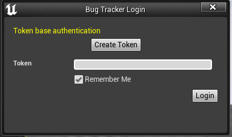
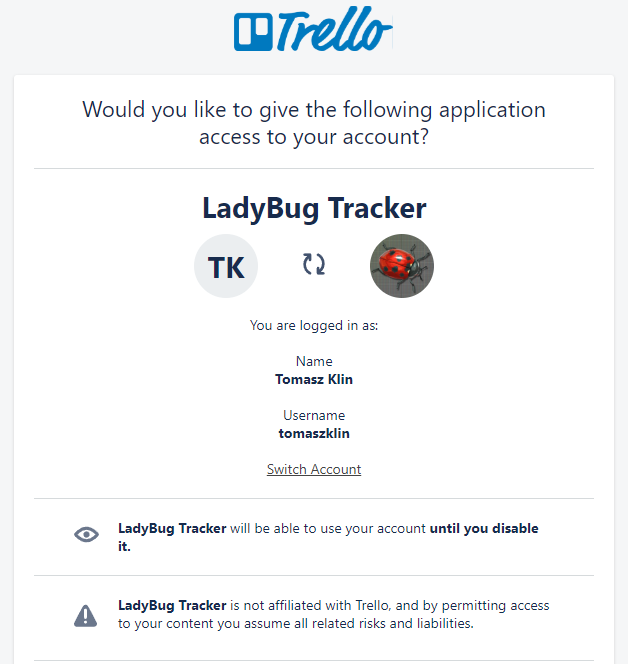
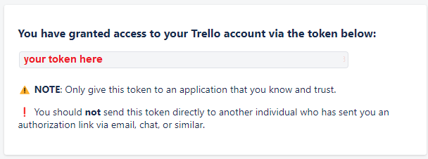

Trello Integration “Trello is a collaboration tool that organizes your projects into boards. In one glance, Trello tells you what's being worked on, who's working on what, and where something is in a process.”
Authentication



Trello integration didn't require any project setup.